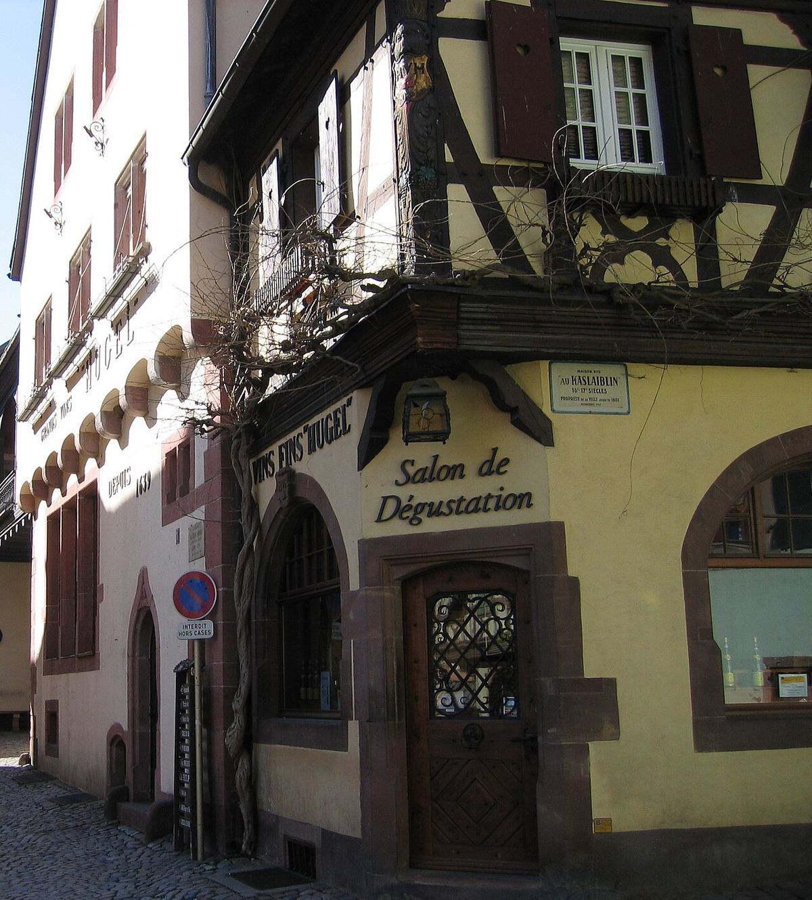

BLANCO
Casa familiar de Riquewihr con orígenes en 1639, una de las más conocidas de Alsacia e impulsora de la regulación de las Vendanges Tardives y Sélection de Grains Nobles.

La familia Hugel está establecida en Riquewihr, uno de los pueblos medievales mejor conservados de Alsacia, desde 1639, cuando Hans Ulrich Hugel se instaló en la localidad en plena Guerra de los Treinta Años. La casa sigue en el mismo lugar y la gestionan miembros de la familia, que trabaja en ella desde hace más de doce generaciones.
Hugel combina un viñedo propio, con parcelas en las mejores laderas de Riquewihr, entre ellas el Grand Cru Schoenenbourg, con uva comprada a viticultores con los que colabora desde hace tiempo. Elabora las variedades alsacianas clásicas, sobre todo Riesling, Gewurztraminer y Pinot Gris, en un estilo generalmente seco.
Jean Hugel, figura destacada de la casa en el siglo XX, desempeñó un papel importante en la definición de las menciones Vendanges Tardives (vendimia tardía) y Sélection de Grains Nobles (selección de granos con podredumbre noble), reguladas oficialmente en los años ochenta, categorías en las que Hugel es un productor de referencia.
La gama se organiza en varios niveles, desde los vinos Classic y el ensamblaje Gentil hasta los vinos de los mejores viñedos de la familia y los vinos dulces de vendimia tardía. Las etiquetas amarillas de Hugel son muy reconocibles.
Riquewihr, rodeado de viñedos, es uno de los pueblos más visitados de la Ruta del Vino de Alsacia.